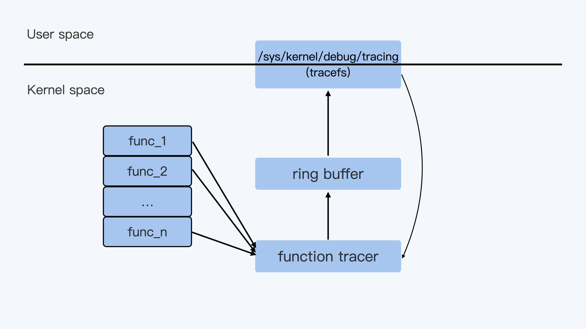
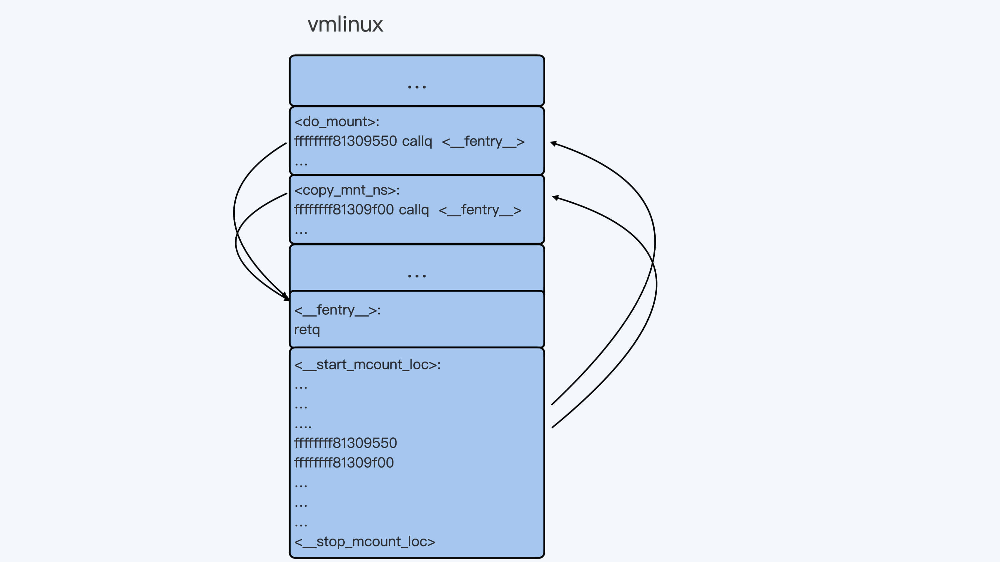
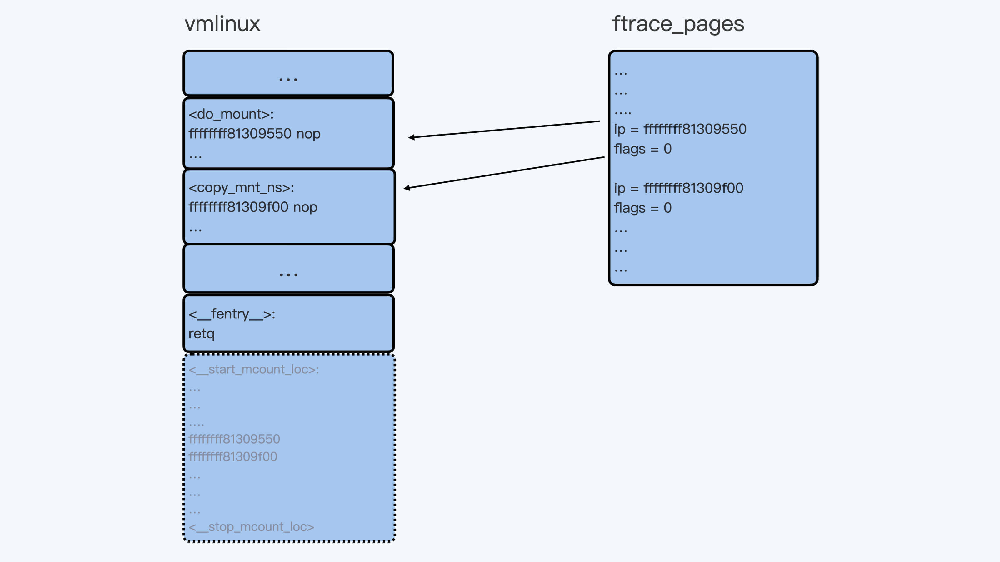
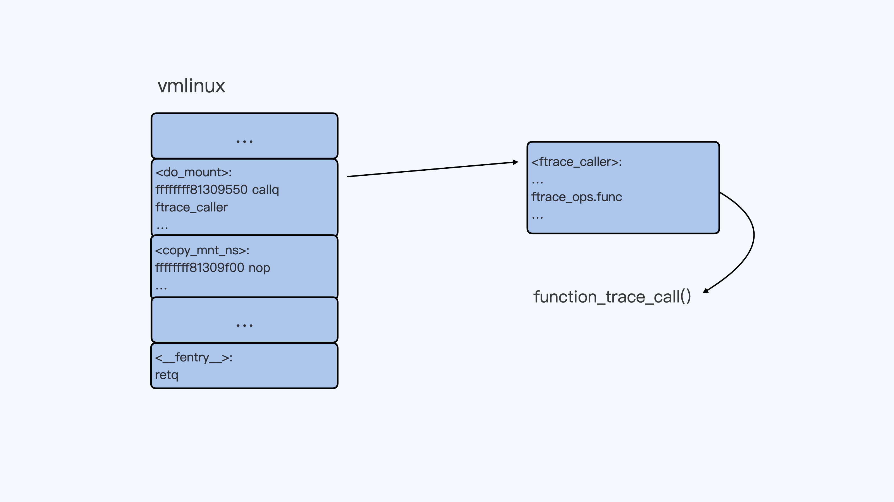

- 00 开篇词 一个态度两个步骤，成为容器实战高手.md.html
- 01 认识容器：容器的基本操作和实现原理.md.html
- 02 理解进程（1）：为什么我在容器中不能kill 1号进程？.md.html
- 03 理解进程（2）：为什么我的容器里有这么多僵尸进程？.md.html
- 04 理解进程（3）：为什么我在容器中的进程被强制杀死了？.md.html
- 05 容器CPU（1）：怎么限制容器的CPU使用？.md.html
- 06 容器CPU（2）：如何正确地拿到容器CPU的开销？.md.html
- 07 Load Average：加了CPU Cgroup限制，为什么我的容器还是很慢？.md.html
- 08 容器内存：我的容器为什么被杀了？.md.html
- 09 Page Cache：为什么我的容器内存使用量总是在临界点.md.html
- 10 Swap：容器可以使用Swap空间吗？.md.html
- 11 容器文件系统：我在容器中读写文件怎么变慢了？.md.html
- 12 容器文件Quota：容器为什么把宿主机的磁盘写满了？.md.html
- 13 容器磁盘限速：我的容器里磁盘读写为什么不稳定_.md.html
- 14 容器中的内存与IO：容器写文件的延时为什么波动很大？.md.html
- 15 容器网络：我修改了_proc_sys_net下的参数，为什么在容器中不起效？.md.html
- 16 容器网络配置（1）：容器网络不通了要怎么调试.md.html
- 17 容器网络配置（2）：容器网络延时要比宿主机上的高吗.md.html
- 18 容器网络配置（3）：容器中的网络乱序包怎么这么高？.md.html
- 19 容器安全（1）：我的容器真的需要privileged权限吗.md.html
- 20 容器安全（2）：在容器中，我不以root用户来运行程序可以吗？.md.html
- 加餐01 案例分析：怎么解决海量IPVS规则带来的网络延时抖动问题？.md.html
- 加餐02 理解perf：怎么用perf聚焦热点函数？.md.html
- 加餐03 理解ftrace（1）：怎么应用ftrace查看长延时内核函数？.md.html
- 加餐04 理解ftrace（2）：怎么理解ftrace背后的技术tracepoint和kprobe？.md.html
- 加餐05 eBPF：怎么更加深入地查看内核中的函数？.md.html
- 加餐06 BCC：入门eBPF的前端工具.md.html
- 结束语 跳出舒适区，突破思考的惰性.md.html
- 捐赠
加餐03 理解ftrace（1）：怎么应用ftrace查看长延时内核函数？
你好，我是程远。
上一讲里，我们一起学习了perf这个工具。在我们的案例里，使用perf找到了热点函数之后，我们又使用了ftrace这个工具，最终锁定了长延时的函数estimation_timer()。
那么这一讲，我们就来学习一下ftrace这个工具，主要分为两个部分来学习。
第一部分讲解ftrace的最基本的使用方法，里面也会提到在我们的案例中是如何使用的。第二部分我们一起看看Linux ftrace是如何实现的，这样可以帮助你更好地理解Linux的ftrace工具。
ftrace的基本使用方法
ftrace这个工具在2008年的时候就被合入了Linux内核，当时的版本还是Linux2.6.x。从ftrace的名字function tracer，其实我们就可以看出，它最初就是用来trace内核中的函数的。
当然了，现在ftrace的功能要更加丰富了。不过，function tracer作为ftrace最基本的功能，也是我们平常调试Linux内核问题时最常用到的功能。那我们就先来看看这个最基本，同时也是最重要的function tracer的功能。
ftrace的操作都可以在tracefs这个虚拟文件系统中完成，对于CentOS，这个tracefs的挂载点在/sys/kernel/debug/tracing下：
# cat /proc/mounts | grep tracefs
tracefs /sys/kernel/debug/tracing tracefs rw,relatime 0 0
你可以进入到 /sys/kernel/debug/tracing目录下，看一下这个目录下的文件：
# cd /sys/kernel/debug/tracing
# ls
available_events dyn_ftrace_total_info kprobe_events saved_cmdlines_size set_graph_notrace trace_clock tracing_on
available_filter_functions enabled_functions kprobe_profile saved_tgids snapshot trace_marker tracing_thresh
available_tracers error_log max_graph_depth set_event stack_max_size trace_marker_raw uprobe_events
buffer_percent events options set_event_pid stack_trace trace_options uprobe_profile
buffer_size_kb free_buffer per_cpu set_ftrace_filter stack_trace_filter trace_pipe
buffer_total_size_kb function_profile_enabled printk_formats set_ftrace_notrace synthetic_events trace_stat
current_tracer hwlat_detector README set_ftrace_pid timestamp_mode tracing_cpumask
dynamic_events instances saved_cmdlines set_graph_function trace tracing_max_latency
tracefs虚拟文件系统下的文件操作，其实和我们常用的Linux proc和sys虚拟文件系统的操作是差不多的。通过对某个文件的echo操作，我们可以向内核的ftrace系统发送命令，然后cat某个文件得到ftrace的返回结果。
对于ftrace，它的输出结果都可以通过 cat trace 这个命令得到。在缺省的状态下ftrace的tracer是nop，也就是ftrace什么都不做。因此，我们从cat trace中也看不到别的，只是显示了trace输出格式。
# pwd
/sys/kernel/debug/tracing
# cat trace
# tracer: nop
#
# entries-in-buffer/entries-written: 0/0 #P:12
#
# _-----=> irqs-off
# / _----=> need-resched
# | / _---=> hardirq/softirq
# || / _--=> preempt-depth
# ||| / delay
# TASK-PID CPU# |||| TIMESTAMP FUNCTION
# | | | |||| | |
下面，我们可以执行 echo function > current_tracer 来告诉ftrace，我要启用function tracer。
# cat current_tracer
nop
# cat available_tracers
hwlat blk mmiotrace function_graph wakeup_dl wakeup_rt wakeup function nop
# echo function > current_tracer
# cat current_tracer
function
在启动了function tracer之后，我们再查看一下trace的输出。这时候我们就会看到大量的输出，每一行的输出就是当前内核中被调用到的内核函数，具体的格式你可以参考trace头部的说明。
# cat trace | more
# tracer: function
#
# entries-in-buffer/entries-written: 615132/134693727 #P:12
#
# _-----=> irqs-off
# / _----=> need-resched
# | / _---=> hardirq/softirq
# || / _--=> preempt-depth
# ||| / delay
# TASK-PID CPU# |||| TIMESTAMP FUNCTION
# | | | |||| | |
systemd-udevd-20472 [011] .... 2148512.735026: lock_page_memcg <-page_remove_rmap
systemd-udevd-20472 [011] .... 2148512.735026: PageHuge <-page_remove_rmap
systemd-udevd-20472 [011] .... 2148512.735026: unlock_page_memcg <-page_remove_rmap
systemd-udevd-20472 [011] .... 2148512.735026: __unlock_page_memcg <-unlock_page_memcg
systemd-udevd-20472 [011] .... 2148512.735026: __tlb_remove_page_size <-unmap_page_range
systemd-udevd-20472 [011] .... 2148512.735027: vm_normal_page <-unmap_page_range
systemd-udevd-20472 [011] .... 2148512.735027: mark_page_accessed <-unmap_page_range
systemd-udevd-20472 [011] .... 2148512.735027: page_remove_rmap <-unmap_page_range
systemd-udevd-20472 [011] .... 2148512.735027: lock_page_memcg <-page_remove_rmap
…
看到这个trace输出，你肯定会觉得输出的函数太多了，查看起来太困难了。别担心，下面我给你说个技巧，来解决输出函数太多的问题。
其实在实际使用的时候，我们可以利用ftrace里的filter参数做筛选，比如我们可以通过set_ftrace_filter只列出想看到的内核函数，或者通过set_ftrace_pid只列出想看到的进程。
为了让你加深理解，我给你举个例子，比如说，如果我们只是想看do_mount这个内核函数有没有被调用到，那我们就可以这么操作:
# echo nop > current_tracer
# echo do_mount > set_ftrace_filter
# echo function > current_tracer
在执行了mount命令之后，我们查看一下trace。
这时候，我们就只会看到一条do_mount()函数调用的记录，我们一起来看看，输出结果里的几个关键参数都是什么意思。
输出里”do_mount <- ksys_mount”表示do_mount()函数是被ksys_mount()这个函数调用到的，”2159455.499195”表示函数执行时的时间戳，而”[005]“是内核函数do_mount()被执行时所在的CPU编号，还有”mount-20889”，它是do_mount()被执行时当前进程的pid和进程名。
# mount -t tmpfs tmpfs /tmp/fs
# cat trace
# tracer: function
#
# entries-in-buffer/entries-written: 1/1 #P:12
#
# _-----=> irqs-off
# / _----=> need-resched
# | / _---=> hardirq/softirq
# || / _--=> preempt-depth
# ||| / delay
# TASK-PID CPU# |||| TIMESTAMP FUNCTION
# | | | |||| | |
mount-20889 [005] .... 2159455.499195: do_mount <-ksys_mount
这里我们只能判断出，ksys mount()调用了do mount()这个函数，这只是一层调用关系，如果我们想要看更加完整的函数调用栈，可以打开ftrace中的func_stack_trace选项：
# echo 1 > options/func_stack_trace
打开以后，我们再来做一次mount操作，就可以更清楚地看到do_mount()是系统调用(syscall)之后被调用到的。
# umount /tmp/fs
# mount -t tmpfs tmpfs /tmp/fs
# cat trace
# tracer: function
#
# entries-in-buffer/entries-written: 3/3 #P:12
#
# _-----=> irqs-off
# / _----=> need-resched
# | / _---=> hardirq/softirq
# || / _--=> preempt-depth
# ||| / delay
# TASK-PID CPU# |||| TIMESTAMP FUNCTION
# | | | |||| | |
mount-20889 [005] .... 2159455.499195: do_mount <-ksys_mount
mount-21048 [000] .... 2162013.660835: do_mount <-ksys_mount
mount-21048 [000] .... 2162013.660841: <stack trace>
=> do_mount
=> ksys_mount
=> __x64_sys_mount
=> do_syscall_64
=> entry_SYSCALL_64_after_hwframe
结合刚才说的内容，我们知道了，通过function tracer可以帮我们判断内核中函数是否被调用到，以及函数被调用的整个路径 也就是调用栈。
这样我们就理清了整体的追踪思路：如果我们通过perf发现了一个内核函数的调用频率比较高，就可以通过function tracer工具继续深入，这样就能大概知道这个函数是在什么情况下被调用到的。
那如果我们还想知道，某个函数在内核中大致花费了多少时间，就像加餐第一讲案例中我们就拿到了estimation_timer()时间开销，又要怎么做呢？
这里需要用到ftrace中的另外一个tracer，它就是function_graph。我们可以在刚才的ftrace的设置基础上，把current_tracer设置为function_graph，然后就能看到do_mount()这个函数调用的时间了。
# echo function_graph > current_tracer
# umount /tmp/fs
# mount -t tmpfs tmpfs /tmp/fs
# cat trace
# tracer: function_graph
#
# CPU DURATION FUNCTION CALLS
# | | | | | | |
0) ! 175.411 us | do_mount();
通过function_graph tracer，还可以让我们看到每个函数里所有子函数的调用以及时间，这对我们理解和分析内核行为都是很有帮助的。
比如说，我们想查看kfree_skb()这个函数是怎么执行的，就可以像下面这样配置：
# echo '!do_mount ' >> set_ftrace_filter ### 先把之前的do_mount filter给去掉。
# echo kfree_skb > set_graph_function ### 设置kfree_skb()
# echo nop > current_tracer ### 暂时把current_tracer设置为nop, 这样可以清空trace
# echo function_graph > current_tracer ### 把current_tracer设置为function_graph
设置完成之后，我们再来看trace的输出。现在，我们就可以看到kfree_skb()下的所有子函数的调用，以及它们花费的时间了。
具体输出如下，你可以做个参考：
# cat trace | more
# tracer: function_graph
#
# CPU DURATION FUNCTION CALLS
# | | | | | | |
0) | kfree_skb() {
0) | skb_release_all() {
0) | skb_release_head_state() {
0) | nf_conntrack_destroy() {
0) | destroy_conntrack [nf_conntrack]() {
0) 0.205 us | nf_ct_remove_expectations [nf_conntrack]();
0) | nf_ct_del_from_dying_or_unconfirmed_list [nf_conntrack]() {
0) 0.282 us | _raw_spin_lock();
0) 0.679 us | }
0) 0.193 us | __local_bh_enable_ip();
0) | nf_conntrack_free [nf_conntrack]() {
0) | nf_ct_ext_destroy [nf_conntrack]() {
0) 0.177 us | nf_nat_cleanup_conntrack [nf_nat]();
0) 1.377 us | }
0) | kfree_call_rcu() {
0) | __call_rcu() {
0) 0.383 us | rcu_segcblist_enqueue();
0) 1.111 us | }
0) 1.535 us | }
0) 0.446 us | kmem_cache_free();
0) 4.294 us | }
0) 6.922 us | }
0) 7.665 us | }
0) 8.105 us | }
0) | skb_release_data() {
0) | skb_free_head() {
0) 0.470 us | page_frag_free();
0) 0.922 us | }
0) 1.355 us | }
0) + 10.192 us | }
0) | kfree_skbmem() {
0) 0.669 us | kmem_cache_free();
0) 1.046 us | }
0) + 13.707 us | }
好了，对于ftrace的最基本的、也是最重要的内核函数相关的tracer，我们已经知道怎样操作了。那你有没有好奇过，这个ftrace又是怎么实现的呢？下面我们就来看一下。
ftrace的实现机制
下面这张图描述了ftrace实现的high level的架构，用户通过tracefs向内核中的function tracer发送命令，然后function tracer把收集到的数据写入一个ring buffer，再通过tracefs输出给用户。

这里的整个过程看上去比较好理解。不过还是有一个问题，不知道你有没有思考过，
frace可以收集到内核中任意一个函数被调用的情况，这点是怎么做到的？
你可能想到，这是因为在内核的每个函数中都加上了hook点了吗？这时我们来看一下内核的源代码，显然并没有这样的hook点。那Linux到底是怎么实现的呢？
其实这里ftrace是利用了gcc编译器的特性，再加上几步非常高明的代码段替换操作，就很完美地实现了对内核中所有函数追踪的接口（这里的“所有函数”不包括“inline函数”）。下面我们一起看一下这个实现。
Linux内核在编译的时候，缺省会使用三个gcc的参数”-pg -mfentry -mrecord-mcount”。
其中，”-pg -mfentry”这两个参数的作用是，给编译出来的每个函数开头都插入一条指令”callq <fentry>“。
你如果编译过内核，那么你可以用”objdump -D vmlinux”来查看一下内核函数的汇编，比如do_mount()函数的开头几条汇编就是这样的：
ffffffff81309550 <do_mount>:
ffffffff81309550: e8 fb 83 8f 00 callq ffffffff81c01950 <__fentry__>
ffffffff81309555: 55 push %rbp
ffffffff81309556: 48 89 e5 mov %rsp,%rbp
ffffffff81309559: 41 57 push %r15
ffffffff8130955b: 49 89 d7 mov %rdx,%r15
ffffffff8130955e: ba 00 00 ed c0 mov $0xc0ed0000,%edx
ffffffff81309563: 41 56 push %r14
ffffffff81309565: 49 89 fe mov %rdi,%r14
ffffffff81309568: 41 55 push %r13
ffffffff8130956a: 4d 89 c5 mov %r8,%r13
ffffffff8130956d: 41 54 push %r12
ffffffff8130956f: 53 push %rbx
ffffffff81309570: 48 89 cb mov %rcx,%rbx
ffffffff81309573: 81 e1 00 00 ff ff and $0xffff0000,%ecx
ffffffff81309579: 48 83 ec 30 sub $0x30,%rsp
...
而”-mrecord-mcount”参数在最后的内核二进制文件vmlinux中附加了一个mcount_loc的段，这个段里记录了所有”callq <fentry>“指令的地址。这样我们很容易就能找到每个函数的这个入口点。
为了方便你理解，我画了一张示意图，我们编译出来的vmlinux就像图里展示的这样：

不过你需要注意的是，尽管通过编译的方式，我们可以给每个函数都加上一个额外的hook点，但是这个额外”fentry”函数调用的开销是很大的。
即使”fentry“函数中只是一个retq指令，也会使内核性能下降13%，这对于Linux内核来说显然是不可以被接受的。那我们应该怎么办呢？
ftrace在内核启动的时候做了一件事，就是把内核每个函数里的第一条指令”callq <fentry>“（5个字节），替换成了”nop”指令（0F 1F 44 00 00），也就是一条空指令，表示什么都不做。
虽然是空指令，不过在内核的代码段里，这相当于给每个函数预留了5个字节。这样在需要的时候，内核可以再把这5个字节替换成callq指令，call的函数就可以指定成我们需要的函数了。
同时，内核的mcount_loc段里，虽然已经记录了每个函数”callq <fentry>“的地址，不过对于ftrace来说，除了地址之外，它还需要一些额外的信息。
因此，在内核启动初始化的时候，ftrace又申请了新的内存来存放mcount_loc段中原来的地址信息，外加对每个地址的控制信息，最后释放了原来的mcount_loc段。
所以Linux内核在机器上启动之后，在内存中的代码段和数据结构就会发生变化。你可以参考后面这张图，它描述了变化后的情况：

当我们需要用function tracer来trace某一个函数的时候，比如”echo do_mount > set_ftrace_filter”命令执行之后，do_mount()函数的第一条指令就会被替换成调用ftrace_caller的指令。
你可以查看后面的示意图，结合这张图来理解刚才的内容。

这样，每调用一次do_mount()函数，它都会调用function_trace_call()函数，把ftrace function trace信息放入ring buffer里，再通过tracefs输出给用户。
重点小结
这一讲我们主要讲解了Linux ftrace这个工具。
首先我们学习了ftrace最基本的操作，对内核函数做trace。在这里最重要的有两个tracers，分别是function和function_graph。
function tracer可以用来记录内核中被调用到的函数的情况。在实际使用的时候，我们可以设置一些ftrace的filter来查看某些我们关心的函数，或者我们关心的进程调用到的函数。
我们还可以设置func_stack_trace选项，来查看被trace函数的完整调用栈。
而function_graph trracer可以用来查看内核函数和它的子函数调用关系以及调用时间，这对我们理解内核的行为非常有帮助。
讲完了ftrace的基本操作之后，我们又深入研究了ftrace在Linux中的实现机制。
在ftrace实现过程里，最重要的一个环节是利用gcc编译器的特性，为每个内核函数二进制码中预留了5个字节，这样内核函数就可以调用调试需要的函数，从而实现了ftrace的功能。
思考题
我们讲ftrace实现机制时，说过内核中的“inline函数”不能被ftrace到，你知道这是为什么吗？那么内核中的”static函数”可以被ftrace追踪到吗？
欢迎你在留言区跟我分享你的思考与疑问，如果这一讲对你有启发，也欢迎转发给你的同事、朋友，跟他一起交流学习。
© 2019 - 2023 Liangliang Lee. Powered by gin and hexo-theme-book.